SecretFilesマニュアル
3. SecretFilesサービス
3.2 各ペインの説明
3.2.3 中央ペイン
中央ペインには、次のタブが表示されています。
* ログインした方の権限によって、表示されるタブは異なります。
* このマニュアルでは、通常のご利用者が利用することのできる機能についてのみ説明します。
* ログインした方の権限によって、表示されるタブは異なります。
* このマニュアルでは、通常のご利用者が利用することのできる機能についてのみ説明します。
3.2.3.1 ファイル全体表示
中央ペインの上部に表示されている「ファイル全体表示」タブをマウス左クリックして下さい。
* 初期状態では、ここが選択、表示されています。
フォルダ1
左ペインのワークエリア1 -> フォルダ1の内容が表示されます。
表示方法にはList表示とIcon表示とがあります。
* これらは表示方法が異なるだけで、中身は一緒です。
List表示
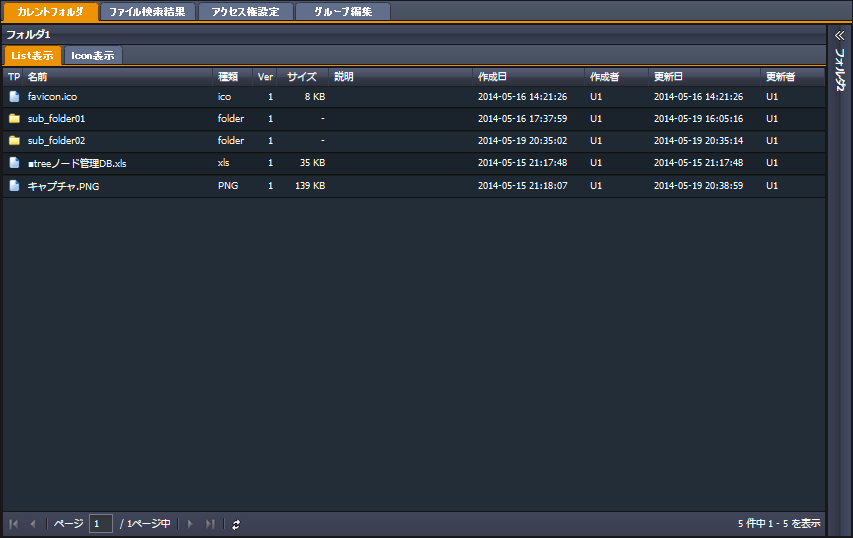
左から順に説明します。
・フォルダの行を選択してマウス左ダブルクリックをすると、そのフォルダを開きます。
左ペインの該当箇所が表示され、選択状態になります。
また、中央ペインのファイル全体表示ペインには、選択したフォルダの中身が表示されます。
・ファイルの行を選択してマウス左ダブルクリックをすると、そのファイルをダウンロードします。
* この動作は、右ペインのファイルプロパティを利用した操作と基本的には同じですが、ファイルのバージョンなどの指定はできません。
(下図はWindows7にてFirefoxを利用した場合のものです。)
(* ご利用のOS、ブラウザによって動作、表示される画面は異なります。)
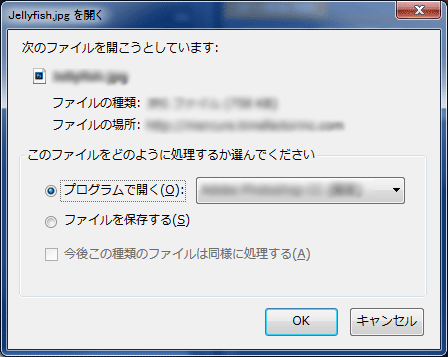
Icon表示
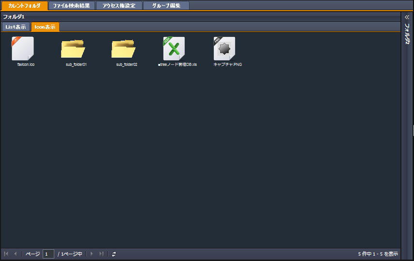
ファイルタイプごとのアイコンを表示します。
アイコンの下には、ファイル名、更新日時を表示します。
以下は、表示されるアイコンの例です。
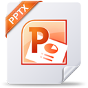
・フォルダアイコンにてマウス左ダブルクリックをすると、そのフォルダを開きます。
左ペインの該当箇所が表示され、選択状態になります。
また、中央ペインのファイル全体表示ペインには、選択したフォルダの中身が表示されます。
・上図のいずれかのファイルアイコンにてマウス左ダブルクリックをした場合には、そのファイルをダウンロードします。
ページングバー
List表示ペインとIcon表示ペインの最下部には、ページングバーがあります。
該当するフォルダ内のフォルダ、ファイルの総数と表示しているフォルダ、ファイルのの件数を表示します。
該当するデータが0件の場合には、ここには「表示するデータがありません。」と表示されます。
List表示およびIcon表示は、画面上に最大25件までを表示します。
25件を超える場合には、別のページ内容をダウンロードすることで表示することができます。
例えば、全件で73件のデータがある場合、ページは3ページとなり、最初の1件目から25件目までが1ページ目として表示されます。次の26件目からを表示する場合には、 をクリックします。
ページ数を表示している枠内に3を入力すると、3ページ目を読み込みます。
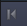 をクリックすると、一番最初のページに移動し、 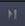 をクリックすると最後のページに移動します。
 をクリックすると、読み込んだデータを再読み込みします。
をクリックすると、読み込んだデータを再読み込みします。
フォルダ2
フォルダ2を表示するときは、中央ペインの右端のタイトルバーの をクリックします。
閉じるときには、 をクリックします。
表示される内容は、フォルダ1の場合と同様です。
* 初期状態では、ここが選択、表示されています。
フォルダ1
左ペインのワークエリア1 -> フォルダ1の内容が表示されます。
表示方法にはList表示とIcon表示とがあります。
* これらは表示方法が異なるだけで、中身は一緒です。
List表示
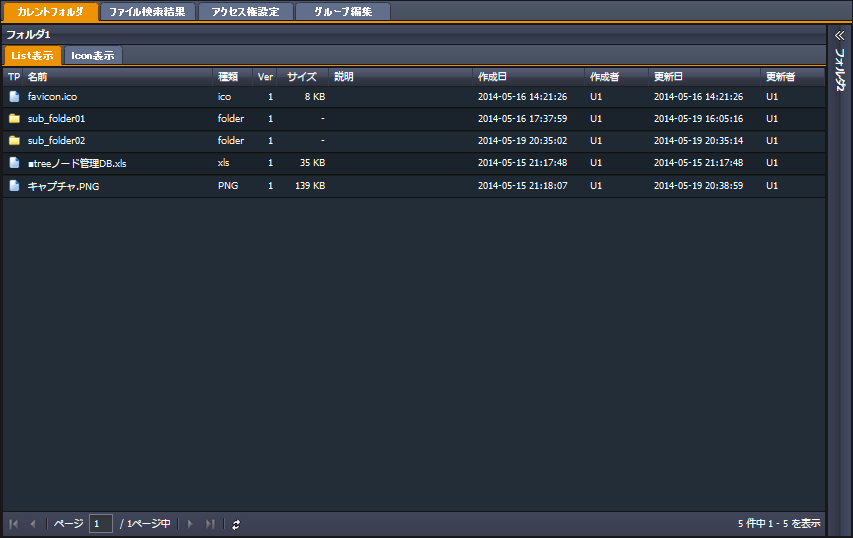
左から順に説明します。
| TP: | ファイルとフォルダのいずれのタイプなのかを画像で表示します。 * フォルダの場合には となり、ファイルの場合には となります。 |
|---|---|
| 名前: | ファイル名を表示します。 |
| 種類: | ファイルの拡張子を表示します。 |
| Ver: | ファイルのバージョンを表示します。 * SecretFilesでは、同一の場所に同一の名前のファイルが複数存在する場合、そのタイムスタンプによってバージョンを管理することができます。ひとつめのファイルはVerが1となっています。複数のバージョンが存在する場合には、存在するバージョンの数が表示されます。 * ファイルを開く際には、このバージョンを指定することができます。 |
| サイズ: | ファイルのサイズを表示します。サイズの単位は、大きさに合わせてB, KB, MB, GBなどとなります。 |
| キーワード: | 右ペインのプロパティで設定したキーワードを表示します。 |
| 説明: | 右ペインのプロパティで設定したキーワードを表示します。 |
| 作成日: | ファイルをアップロードした時点でのサーバ側のタイムスタンプです。 |
| 作成者: | ファイルをアップロードした利用者が作成者になります。 |
| 更新日: | 同一箇所に同一名のファイルをアップロードした際のサーバ側でのタイムスタンプです。 |
| 更新者: | 同一箇所に同一名のファイルをアップロードした際に、アップロードした利用者が更新者となります。 |
| URL: | 本サービスで管理しているファイルのパスです。この情報をコピーしてメールなどで配布すると、本サービスを利用していなくても、ダウンロードすることができます。 ただし、この機能を利用するためには、ファイルに対するアクセス権が「他の利用者に対して読み取り可能」となっている必要があります。 |
・フォルダの行を選択してマウス左ダブルクリックをすると、そのフォルダを開きます。
左ペインの該当箇所が表示され、選択状態になります。
また、中央ペインのファイル全体表示ペインには、選択したフォルダの中身が表示されます。
・ファイルの行を選択してマウス左ダブルクリックをすると、そのファイルをダウンロードします。
* この動作は、右ペインのファイルプロパティを利用した操作と基本的には同じですが、ファイルのバージョンなどの指定はできません。
(下図はWindows7にてFirefoxを利用した場合のものです。)
(* ご利用のOS、ブラウザによって動作、表示される画面は異なります。)
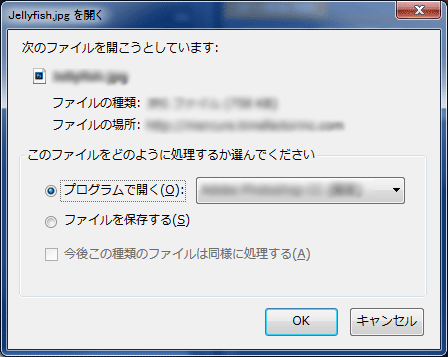
Icon表示
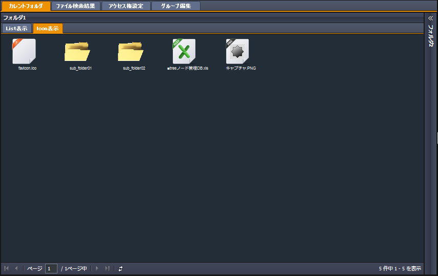
ファイルタイプごとのアイコンを表示します。
アイコンの下には、ファイル名、更新日時を表示します。
以下は、表示されるアイコンの例です。
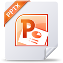
・フォルダアイコンにてマウス左ダブルクリックをすると、そのフォルダを開きます。
左ペインの該当箇所が表示され、選択状態になります。
また、中央ペインのファイル全体表示ペインには、選択したフォルダの中身が表示されます。
・上図のいずれかのファイルアイコンにてマウス左ダブルクリックをした場合には、そのファイルをダウンロードします。
ページングバー
List表示ペインとIcon表示ペインの最下部には、ページングバーがあります。
該当するフォルダ内のフォルダ、ファイルの総数と表示しているフォルダ、ファイルのの件数を表示します。
該当するデータが0件の場合には、ここには「表示するデータがありません。」と表示されます。
List表示およびIcon表示は、画面上に最大25件までを表示します。
25件を超える場合には、別のページ内容をダウンロードすることで表示することができます。
例えば、全件で73件のデータがある場合、ページは3ページとなり、最初の1件目から25件目までが1ページ目として表示されます。次の26件目からを表示する場合には、 をクリックします。
ページ数を表示している枠内に3を入力すると、3ページ目を読み込みます。
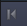 をクリックすると、一番最初のページに移動し、 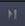 をクリックすると最後のページに移動します。
をクリックすると、読み込んだデータを再読み込みします。フォルダ2
フォルダ2を表示するときは、中央ペインの右端のタイトルバーの をクリックします。
閉じるときには、 をクリックします。
表示される内容は、フォルダ1の場合と同様です。